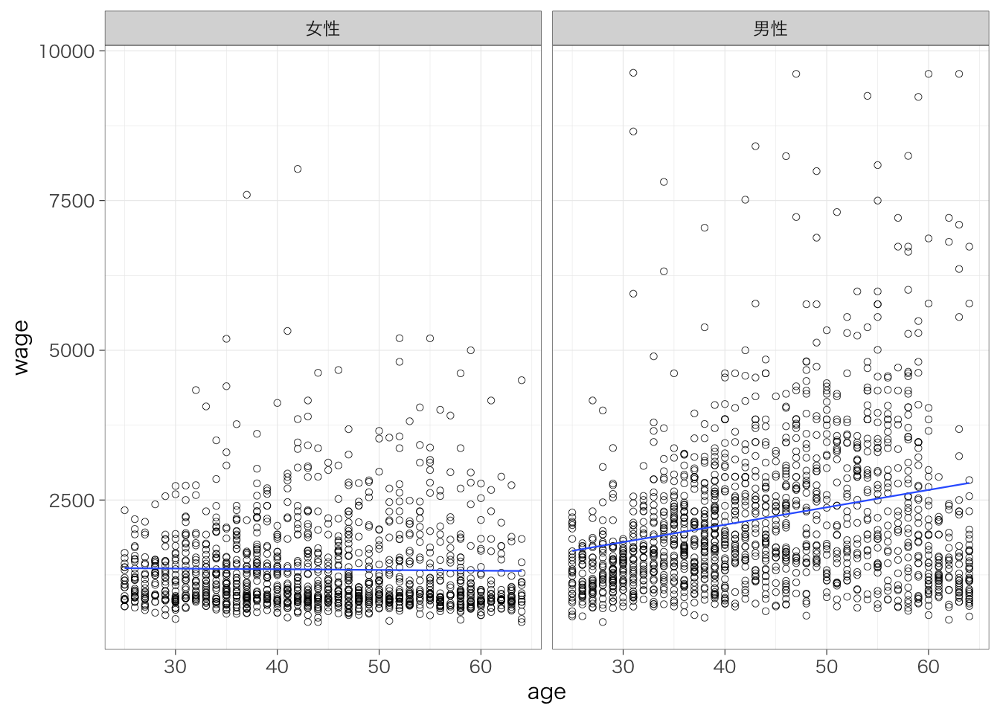

- まえがき
- 1 研究計画を立てる
- 2 RStudioの下準備
- 3 データの読み込み
- 4 データの加工
- 5 1変数の集計
- 6 2変数の集計
- 7 回帰分析の基礎
- 8 重回帰分析の活用
- 9 社会学のデータ分析でよくある処理
- 10 論文の書き方
- 11 参考文献・ウェブサイト
8.5 媒介分析／要因分解
8.5.1 モチベーション
女性は男性と比べて賃金が低い（男女間賃金格差）。たとえばその原因には、(1) 女性が男性よりも教育水準（学歴）が低い、(2) 女性が男性よりもスキルレベル（ここでは、PIAACの試験で測定された数的思考力のスコアとする）が低い、ということがありえるだろう。このような原因を調べるというときにも、重回帰分析を活用することができる。
性別をX、賃金をY、学歴およびスキルレベルをMとすると、ここでのアイデアは次のような図に表すことができる。

性別が賃金に与える効果は、(1) 女性の教育水準やスキルレベルが低く、したがって賃金も低い（X -> M -> Y）という部分と、(2) 教育水準やスキルレベルを一定としてもなお女性のほうが賃金が低い（X -> Y | M）という部分とに分けることができる。このようにして、XとYの中間にある要因を考えることでグループ間の差や独立変数の効果を分けていくことを指して、媒介分析 mediation analysisや要因分解decompositionなどという。
piaac <- piaac %>%
mutate(female_d = if_else(gender == "女性", 1, 0))
reg_res1 <- lm(data = piaac, wage ~ female_d)
reg_res2 <- lm(data = piaac, wage ~ female_d + educ)
reg_res3 <- lm(data = piaac, wage ~ female_d + educ + numeracy)
msummary(list(reg_res1, reg_res2, reg_res3),
stars = TRUE,
coef_rename = c("(Intercept)" = "切片",
"female_d" = "女性（vs. 男性）",
"educ高校" = "高校（vs. 中学）",
"educ短大高専" = "短大高専（vs. 中学）",
"educ大学大学院" = "大学大学院（vs. 中学）",
"numeracy" = "数的思考力"),
gof_omit = "R2 Adj.|AIC|BIC|Log.Lik.|F")| Model 1 | Model 2 | Model 3 | |
|---|---|---|---|
| 切片 | 2364.249*** | 2213.629*** | −275.705 |
| (140.300) | (200.714) | (796.765) | |
| 女性（vs. 男性） | −707.720*** | −596.691** | −529.347* |
| (202.584) | (211.659) | (212.346) | |
| 大学大学院（vs. 中学） | 495.320* | 162.849 | |
| (251.846) | (271.716) | ||
| 短大高専（vs. 中学） | −53.836 | −134.743 | |
| (267.673) | (268.414) | ||
| educ中学 | −520.549 | −243.465 | |
| (386.309) | (395.123) | ||
| 数的思考力 | 8.698** | ||
| (2.695) | |||
| Num.Obs. | 2921 | 2921 | 2921 |
| R2 | 0.004 | 0.007 | 0.011 |
| + p < 0.1, * p < 0.05, ** p < 0.01, *** p < 0.001 |
Model 1では女性は男性に比して-708円賃金が低いということがわかる。
Model 2では、学歴を追加している。学歴の係数は正であり、学歴が高いほど、賃金は高い傾向があるといえる。学歴を一定とすると、女性の係数は-597となり、これはModel 1の女性の係数よりも小さい。すなわち、女性の賃金が低いことの一部は、学歴が低いために賃金が低い、ということによって生じているということがわかる。
Model 3ではさらに数的思考力を追加している。数的思考力の係数は正であり、数的思考力のスコアが高いほど、賃金が高い傾向があるといえる。学歴と数的思考力を一定とすると、女性の係数は-529となり、やはりModel 1の女性の係数よりも小さい。すなわち、女性の賃金が低いことの一部は、学歴が低いために賃金が低いこと、数的思考力スコアが低いために賃金が低いことによって生じているということがわかる。しかしながら、これらの個人属性を一定としてもなお、男女間には非常に大きな賃金格差が存在しているといえる。
8.5.2 （発展）係数変化の可視化
女性の係数を図にして表すことによって、それぞれの要因を追加したときの係数の違いを視覚的に把握しやすくなる。broomパッケージを使うことで、回帰分析の推定結果から係数や信頼区間に関する値を抽出し、それを使って図を作成することができる。
install.packages("broom") #未インストールの場合のみ
library(broom)m1 <- tidy(reg_res1, conf.int = TRUE) %>%
mutate(model = "Model 1")
m2 <- tidy(reg_res2, conf.int = TRUE) %>%
mutate(model = "Model 2")
m3 <- tidy(reg_res3, conf.int = TRUE) %>%
mutate(model = "Model 3")
m1 %>%
bind_rows(m2, m3) %>%
filter(term == "female_d") %>%
ggplot(aes(x = model, y = estimate)) +
geom_point() +
geom_pointrange(aes(ymax = conf.high, ymin = conf.low)) +
geom_text(aes(label = round(estimate, digit = 1)), hjust = 1.2) +
ylim(-1000, 0) +
geom_hline(yintercept = 0, lty = 2) +
labs(x = "", y = "対数賃金の男女差", caption = "注：Model 1は性別のみ、Model 2は学歴を統制、Model 3はさらに数的思考力を統制。")